1942—Modern Pattern Design
by Harriet Pepin
Chapter 9—Slacks, Shorts, Culottes and Bathing Suits
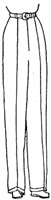Not so many years ago, slacks were not the accepted garments they are today. As social standards change, so clothes change. There are but few women today who do not include at least one slack suit in their wardrobes. Originally, slacks or trouser-like garments were used for certain purposes, such as for beach, fishing, hunting or similar rugged environment. Women liked them and accepted them generally. Then the manufacturers introduced lounging slacks made from feminine types of fabrics. The cinema stars did much to popularize the garments. After a grinding day in the studios where perfect grooming was maintained, the psychological benefits which were felt by slipping into ultra casual apparel increased the demand for a wide variety of slacks. Because the stars could afford to pay the price, designers created lounging clothes in luxurious fabrics such as velvet, satin and even gold lame. By some women, they are preferred instead of the usual hostess gown or informal dinner dress.
When both men and women became accustomed to this new type of apparel, slacks were soon classified functionally, the same as any dress might be. Fashion magazines showed beach slacks, after skiing trousers, cruise slacks et cetera. Finally shorts appeared and now they are generally accepted for active sports wear.
It has been interesting to note how these garments have improved as to cut and fit during the ensuing years. Once accepted as conventional garb for women, designers made the slack-buying public style conscious. Women demanded more than just a loose, trouser-like garment. They demanded superior cut and fit which could improve the appearance of the wearer. The designers devoted more thought to placing of the seams and darts. Fabric designers developed fabrics which had little tendency to wrinkle and which could be packed successfully. Shops devoted to producing made-to-measure slacks sprung up in larger cities. Corset manufacturers developed the "pantie-girdles" as the ideal foundation garment to be worn with such garments.
The culotte, or divided skirt, is not so modern. It originated as a substitute for the riding habit used for the side saddle when that style of riding was abandoned for the modern astride seat. It was a modern riding skirt. Now that social standards have changed, women wear riding jodhpurs, breeches and frontier pants. The culotte is an active sports garment used for golf, skating or spectator sports and it is the wise selection of the women who do not have figure proportions for the conventional slack suit. The divided feature of the garment gives it the functional value.
The regular dress model form cannot be used for testing the fit of trouser-like garments but special bathing suit forms are used in the industry. The method for drafting the slack pattern is given and upon completion, this may be checked for accuracy. To gain further knowledge, the reader should draft a pattern for some certain individual and check the muslin upon the figure.
In these first pages are given the methods used to produce the basic slack pattern, straight skirt culotte and the semi-circular culotte. These are followed with further instructions on methods used for cutting varied designs based upon each of these three silhouettes. Shorts are merely an abbreviation of the street length culottes. In later text devoted to lingerie, instructions are given for developing patterns for panties. Note that each of the above basic drafts produce a distinct silhouette. Designs for any subsequent garments should be dependent upon the silhouette produced in the basic block being used.
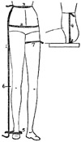How to Take Measurements Correctly
The following measurements are used for drafting the basic slack pattern. The last two listed are not needed for the loose, conventional slack but these measurements should be recorded for use when designing shorts or other variations of styles made from the slack pattern.
1. Side Length Measurement: Taken from Side Waist Point to the floor. From this amount, subtract one inch or the distance the garment will be from floor.
2. Hip Circumference: Taken around the body at the largest position of the hip curve. At the same time, record this hip level at which the measurement was taken. In standard sizes, seven inches is used for all sizes except extra sizes.
3. Waist Circumference: Taken around the body at the waistline.
4. Crotch Depth Measurement: Taken from Side Waist Point to the chair, with the customer sitting erect in chair. If this measurement is taken too short, slacks will "bind" when wearer is seated.
5. Bottom Circumference: An estimate of the finished width at bottom of trouser leg. See standard sizes given on next page. Should be estimated from customer's height and size of foot. Trouser should not have wider cuff circumference than seven-eighths of foot length.
6. Knee Height: Taken from Side Waist Point to knee.
7. Thigh Circumference: Taken around the upper thigh.
| STANDARD FIGURE PROPORTIONS | ||
| SIZE 16 | SIZE 14 | |
| Side length: | 43" | 41" |
| Hip circumference: | 37" | 36" |
| Waist circumference: | 27 1/2" | 26" |
| Crotch depth: | 11" | 10 3/4" |
| Knee height: | ||
| Bottom circumference: | 24" | 22" |
| Thigh circumference: | 22" | 21" |
NOTE: Hip circumference exceeds combined front and back hip measurements which would be secured by doubling measurement of average dress model form. The model form provides extremely small, corseted hip measurement. Slack manufacturers plan their garments with generous hip measurements, assuming wearer will be lightly corseted.
Drafting the Mannish Slacks
The following described method for producing either standard size slacks or personal patterns has been developed after much research on the faulty fit of many slacks now on the market. Measurements may be taken directly from an individual and the hip-length sloper drafted as shown on page 209 or measurements may be taken from a model form or a standard size skirt sloper which has been the basis for designing dresses may be used as directed. Measurements furnished above on this page may be used for the first draft, taking the Side Length, Crotch Depth, and the Bottom Circumference to produce the proper width of cuff.
All the proportions suggested are based upon a successful size 14 garment. If you are working with a set of personal measurements and wish to try the procedure, you should first run through the text and divide the established proportions to avoid later mistakes.
Select a piece of pattern paper equal to the Side Length plus eight inches. This will allow ample room for you to extend the pattern down to provide a hem or additional length needed to add a cuff.
Read Each Step Carefully
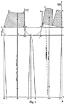See diagram on below.
A-B is a vertical guide line which is 6 inches longer than the Full Side Length Measurement. Label points A and B.
C is located 10 inches below point A on the line A-B. Label point C.
D—Square a guide line left across die paper from point C. Label point D.
Lay your back skirt sloper, with the center back facing inward, in such manner as to make the hip level line of the sloper rest exactly upon this guide line just squared from point C. The side hip point should rest on point C.
E-F—Trace the center back line to produce the vertical guide line E-F shown in Fig. 1. Label points E and F.
G—Shift the skirt sloper to the right, still keeping the side hip point resting on C, until the side waist point rests against the vertical guide line A-B. Label G.
H—With the sloper in same position, trace around it, from G to center back point H, including the basic dart. Label H.
I—With sloper still in same position, trace down center back to hip line. Label I.
I-C—Remove back skirt sloper and connect I and C. (The space between I and F is the extra length needed to accommodate curve of buttocks when figure is seated.)
J—Locate this point from point G, a distance equal to the Crotch Depth Measurement. Label point J and square a guide line to the left across the paper.
K—Extend the line H-I downward until it intersects with the horizontal guide line extending from point J. Mark this intersection point K.
L is located from point K a distance equal to one fourth the Hip Circumference. (As your back and front skirt slopers represent half a total hip circumference, then you may add their combined measurement and divide that sum in half to get the required measurement.) Label point L.
M—Locate this point one-half inch from point L.
N—From point M, square a line upward. Where this line intersects with horizontal guide line C, label point N.
O-P-Q—Place the front skirt sloper with the front hip level point resting on point N, and the hip level line resting upon guide line drawn from C. Trace around the skirt sloper from waistline to hip line and label points O, P and Q.
Connect points L and O with a straight line.
R—From point Q, square a line downward which is equal to the Full Side Length Measurement, less the hip level height on your sloper (distance from P to Q). As you already know, in standard sizes, this would be seven inches, but when using a customer's personal sloper, this would of course vary. Label point R.
S—Where the line Q-R intersects with the crotch depth guide line squared from J, label point S.
T—Square a line from R to intersect with line A-B. Label intersection point T.
U—This point is located at a point which is one third of the distance from L to K. Label point U.
V—Square a vertical line downward from point U which will intersect with the lower line R-T. Label point V.
Shaping the Crotch: These points are established to aid in shaping the curve of the crotch just as similar points were established when shaping armscye and sleeve cap curve.
W—This is located the same distance from L that U is from L. Label W.
X—This is located the same distance from K that U is from K. Label X.
With the aid of your curve, draw in the curved lines at the front and back. Note that the curve from W to U is not as intense as that from F to U. Garment will bind if the front curve is too intense. Check that line in the muslin.
Establishing the Grain Lines: The grain line in the front section is usually the pressing line in the finished garment. Because of the extra fitting and shaping given to the inside back seam, this would not be true in the back section. The proportion of the shaping given here is usually followed in all trouser leg widths. If the leg is to taper more than usual, a greater relative amount would be removed at each point.
Y—Locate point Y half way between points U and S. Label point Y.
Z—Locate point Z half way between points R and V. Label point Z.
Connect points Y and Z and extend line upwards through waistline.
ZZ is squared from the line V-T and need not divide the area in half as it is being located as a fabric grain indicator.
Tapering the Trousers: Proportions given are used to produce an average slack. Later diagrams show a greater amount of shaping. (Some men's tailors measure the customer's shoe and taper trousers so they will not exceed 7/8 of shoe length at cuff.)
1 is located from point Z a distance equal to one fourth the Bottom Circumference Measurement less one-fourth inch.
2 is located from Z a distance equal to one fourth the Bottom Circumference less one-fourth inch.
3-T equals R-1.
3-4 equals 1-Z-2 plus one-half inch. Label 4.
Connect these points: S and 1; U and 2; U and 4; J and 3. Use straight lines and then establish curves near point U as shown in Fig. 1.
Shaping 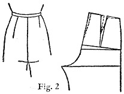Center Back and Shortening Dart: If dart is shortened and straightened to fall in a parallel line with center back seam it creates a mannish effect and tends to slenderize hipline. A slight curve placed in center back seam will make garment fit feminine figure more literally. See Fig. 2. If customer's sloper has pronounced curve at side back seam, it should be traced in as draft is made and then tapering can be started from that point.
Tracing Out Pattern: with blue pencil, trace out as follows:
Front: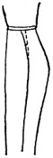 O-W-U-2-1-S-Q-P-O.
Back: H-I-X-F-U-4-ZZ-3-J-C-G-H
Correcting Position of the Side Seam: If the individual being fitted has a large hip measurement and small waist measurement, the shaping at the side seam of the front section must necessarily produce an exaggerated curve. This may not be evident in the skirt pattern but may be revealed in the slack silhouette. When the muslin has been draped upon the model, observe the side seams. If they appear too curved, straighten them by marking in the new seam line with red pencil. Correct the final pattern by taking some off the back and adding it to the front section as indicated by the muslin. Straight side seams give the garment a more mannish appearance, which produces smarter slacks.
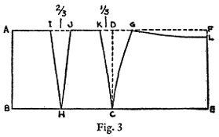Drafting Hip-Length Sloper
If you wish to draft slacks for someone for whom you have no sloper, take measurements as shown on page 207, and draft hip-length sloper as follows:
A-B equals hip level. B-E is one half Hip Circumference, squared from B.
C is located halfway between B and E. C-D and E-F equal A-B and are squared from CE.
F-G equals one-quarter of Waist Circumference. Connect G and C with curved line.
H is located halfway between B and C. A-I equals B-H less one half inch. Connect I and G. Subtract one-quarter Waist Circumference from length of line A-D. The difference will go into dart and shaping of side seam.
I-J equals two thirds of that difference.
D-K equals remaining one third.
Connect I and J with H. Connect K and C.
L is one half inch below F. Connect L and G.
Use these patterns for making trouser draft as usual.
Straight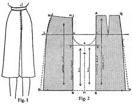 Skirt Culotte
This trouser-like garment resembles a straight skirt with a little additional walking room added at the sides. The culotte feature becomes evident when the figure is in motion. This basic pattern is used when making straight pleated shorts or other styles of culottes to which pleats have been added. It is made directly from the straight skirt sloper. This pattern is seldom used in this form except in shorts. Pleats are usually added to give more walking room.
1. Draw a horizontal guide line across the pattern paper.
2. Lay the back skirt sloper upon this line so the hip level line rests upon this guide line. See Fig. 2.
3. Trace around the back skirt sloper. Label points A, B and C.
4. Point D is located from point A a distance equal to Crotch Depth Measurement plus 1 inch.
5. Square a guide line from line D-B.
6. Point F is located from point D a distance equal to one-fourth the total Hip Circumference. (Because it is assumed that the skirt sloper being used would represent half the total circumference of customer, add the front and back hip measurements of the sloper and divide that sum in half.)
7. Locate point E, on the same level with B, a distance from B equal to D-F. Label E.
8. Locate point G halfway between points F and D. Locate point H halfway between points E and B. Connect points G and H.
9. Connect points E and F with a vertical guide line extending upwards through F.
10. Lay the front skirt sloper along this line in such manner as to have the hip level line resting on the horizontal guide line made in Step 1.
11. Trace around the sloper. Label points I, J and K, L.
12. Remove one-fourth inch shaping from point. I. Label point M. Add the same amount to side waist point J and mark point N. (N-L should equal J-L in length.)
13. Establish vertical grain lines at right angles to hip level line. Establish parallel grain lines in inside trouser area. Mark notch on line G-H.
14. Increase walking room on each side seam one inch. Label points O and P.
15. Draw in crotch curve K-G and C-G, shallow curve.
16. Outline pattern in blue pencil.
Front Section: M-K-G-H-E-O-L-N-M.
Back Section: A-Q-P-B-H-G-C-A.
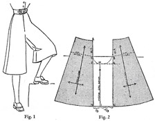Semi-Circular Culotte
This semi-circular culotte can be quickly made from the narrow four-gored skirt pattern diagramed on page 185, whose silhouette resembles this skirt when the figure is not in motion. If you saved the final pattern of that skirt, trim off the seam allowances and follow instructions given below using the skirt pattern in the same manner that you would use a sloper. If you have destroyed it, make the skirt pattern, but no seam allowances need to be added.
1. Draw a horizontal guide line as shown in Fig. 2.
2. Place front and back skirt sections with hip level lines resting on the guide line. Separate them until the space between them equals one fourth the total hip circumference of your model. (Measure the hip lines on these patterns, add them and divide that sum in half.) C-B equals D-E.
3. Locate point F a distance from point A equal to the Crotch Depth plus 1 inch. Square a line from F. Locate point G at the point of intersection.
4. Point H is located at a point equal to one third of the distance from F to G. D-I equals F-H.
5. Connect points H and I and place notch.
6. Establish grain indicators vertically in the center of each section. Note that this will throw all seams slightly off grain equally. Grain could be placed parallel to side seams, which would throw center seam on more of a bias.
The following diagrams show an analysis of the three drafts you have made. Note that the slacks conform to shape of limbs; the straight culotte falls straight from hip level; and the semi-circular eliminates all darts around waistline and extends the silhouette line, the fabric falling with gentle sweep at lower edge. Also note position of seams.
Variations 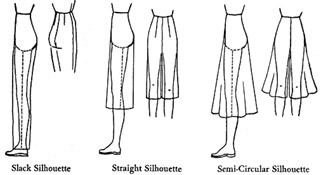of Slacks
Following are several variations of these three trouser-like silhouettes together with diagrams showing the slight changes which are made to produce the added interest in design or the silhouette. As it is impossible for you to observe your results on the model form, they are presented for guidance when you may be creating actual garments.
When you study these over, you will quickly observe that no new pattern making principles are involved. You have arrived at that stage in your study when the remaining lessons will merely demonstrate the repeated use of fundamental principles mastered in earlier chapters. It is the repeated use of these principles which makes the student an expert.
Inserted Group Pleats
As you clip examples of varied designs for slacks, you will notice that many styles introduce dart tucks at the front. This gives a soft effect and will also divide the front area to create the illusion of a more slender waistline. Most women find the soft drapery produced by the tucks to be quite flattering.
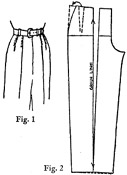Fig. 1 shows a popular style. The dart nearest the center is actually extended down to the bottom of the trouser. This is produced by slashing as shown in Fig. 2. The second short dart pleat is accomplished by building out the side seam an amount equal to the width of the dart. In some cases, the pattern is slashed through to make a wider slack at the cuff. When front bulk is exaggerated by pleats, a hip length fitted lining should be used across the front. This will keep the garment adjusted to the figure.
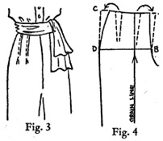Fig. 3 shows a slender trouser which has two short dart pleats at the waist. This style concentrates all the drapery above the hip level. Fig. 4 shows how the center front seam and the side seam are built out an amount equal to each dart. Obviously, these tucks must be limited in size as the seams can be built out only to a moderate degree.
"Clam Diggers"
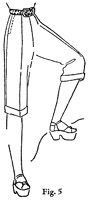Fig. 5 shows an amusing sports garment which was inspired by a designer seeing young people rolling up the legs of regular length slacks when digging clams at clam bakes on the east coast. She simplified the problem by producing short slacks, complete with cuff, which were the right length!
They were made from sturdy fabrics, such as denim and corduroy and then they became popular for bicycling and other sports where a regulation slack was not as convenient. They were not worn nor designed to flatter but for the convenience which they provided.
Because of their shorter length, the regulation slack pattern would be tapered slightly more than for a full length garment. In making this novelty style, the knee height measurement would be the basis of establishing the proper length for the garment. Note that they fall about two inches below the knee.
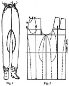Western "Frontiers"
These functionally designed trousers are sometimes called "Kentucky Training Pants" because they were a favorite with men engaged in training horses. In the ranch country of the west, they were called "Frontier Pants." Originally, they were designed for men but when women started wearing them, an enterprising manufacturer started making the same style to women's measurements. They were more comfortable and flattering and they are now available in many different fabrics for varying climates. In denim, wool twill, corduroy or cotton twill, they are the conventional garb at the western dude ranches. The trousers usually taper to provide for wearing with western boots.
The high crotch and narrow leg provides ample freedom for the western saddle rider. Obviously, this garment is not one for the plump figure as it is too revealing. It is boyish in appearance and is the favorite of the expert western horsewoman who, through her activities in the saddle, has retained a slender hipline.
Re-enforcement patches are usually made from the same fabric and the patterns for these patches are traced from the final pattern as shown in Fig. 2. In this case, the novelty pockets are made by extending the back section A under the flap down to B-C which forms the lower edge of the pocket. The facing for the flap is also cut the same shape. By sewing the sections together at B-C, the lower edge of the pocket is closed into the necessary pouch shape. Many variations of pocket design are developed by designers.
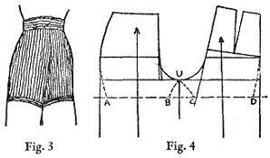Bathing "Trunks"
Bathing trunks are the accompaniment for the modern dressmaker-type skirted bathing suits. They are usually made from rayon jersey or wool jersey. The accompanying diagram shows how they are shaped to the actual thigh measurement. As these garments are made from fabric having elasticity, they should be sized small, but care should be taken that sufficient length is provided in upper portion, but yet not have too deep a crotch as that would hamper swimming movements. If the lower edge is made with a tight band of the fabric the garment will hold its shape better. In some cases, a hem is turned and elastic inserted and on some occasions a narrow tape facing is used.
Extra close fitting trunks, as for dancing, require still more fitting; fold in fitting darts extending from hem to crotch line. Make final pattern from specially fitted muslin. The darts will change the shape of the crotch seam edge but not its length.
Another fitting dart, from C-D to point of waistline dart, may be folded in, and shifted to the waist dart in making final pattern. Very important: the tighter the trousers, the higher the crotch for comfort and freedom; low crotch garments must have wide legs to be comfortable.
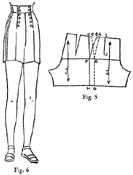"Regulation Navies"
"Regulation navies" are a conventional style of shorts the design for which was borrowed from the men. These cotton twill shorts were originally designed as regulation garb for American sailors. Usually they have a white cotton tape sewed down over the seams which have been moved forward slightly. In some cases they are lined with white coarse cotton. Like the mannish "Frontier Pants," they are best suited to the slight boyish figure. The double front closing is like that used on the regulation "bell bottomed" sailor's trousers.
Fig. 5 shows the method used for moving the side seam forward. A-E-G is the new side seam. No flare is provided at the side as in feminine shorts.
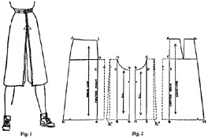Variations of Straight Culotte
The simple straight skirt culotte which provides an inverted pleat at the center front and back is quite a popular style. This pleat adds extra walking room but adds nothing to the width of the silhouette when figure is not in motion. When the pleat is used, the extra walking room which was originally added to the side seams may be eliminated if desired. This pattern is developed in the same manner as for the inverted pleated skirt shown on page 193.
Fig. 2 shows the diagram of the method. Especially note the one half inch extension which is added to the back seam of the pleat in the under leg section. This is done to cause the under section to push forward slightly.
Cut your original straight culotte pattern on the lines A-B and N-E. Spread these sections and build on the added area according to the depth of pleat desired. Before you cut out the pattern, fold the paper on both lines N-E and C-B to study the positions for the seam allowances. When the muslin is assembled, you would snip the seam allowance diagonally at points N and C in the same manner as used for making a skirt.
Almost any skirt design could be adapted to the culotte just as long as the basic silhouette is the same. Varied yokes with panels, group pleats, or even a peasant skirt can become a straight silhouette culotte. Naturally, the same is true of the straight shorts, as shown on next page.
In 1942, a revival of culottes resulted from the need for functional clothing to be worn for defense work. Although they were ideal for that specific purpose, fashion designers saw, in the growing trend towards such clothing for gardening and other war-born activities, a ready market for them as an alternate for slacks, also growing in favor.
Many interesting new designs have been produced by students experimenting with this culotte silhouette. Gored designs, models with several pleats and pleats adjoining panels have been successfully designed. Because it produced a garment resembling a tailored skirt, the fabrics used (denim, cotton twill, gabardine and serge) were of texture which insured the garment holding its shape.
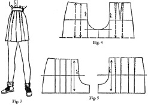Straight Pleated Shorts
Fig. 3 shows the straight shorts with added pleats at front and back. The added movement provided by pleats is particularly good for the wearer who has plump thighs. The eye is attracted to the movement when the figure is in motion and the vertical lines of stitching slenderize the hips.
Notice that Fig. 4 shows how to distribute the basic control under the two pleats, just as you did when you distributed the shaping in shaping tops of the panel skirts. In this case the dotted lines in Fig. 5 show how the pleats would taper slightly from hip to waist, thus producing the bulge necessary in the back of the garment. If this type of garment was being cut from a personal sloper which provided for shaping darts at each side of the front, the pleats in that area would be tapered also to provide the necessary bulge in the finished garment needed to make a neat fitting waistline across the front.
The length of shorts should depend upon the wearer. Some smart styles fall just below the knee. Some women can wear them just above the knee.
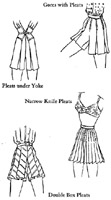Variations of Straight Pleated Shorts
Variations 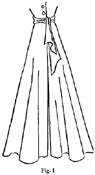of Semi-Circular Culotte
The floor length semi-circular culotte produces an interesting garment for lounging or beach wear as a change from the conventional trouser type. Experiments have proved the fact that an extremely full silhouette, cut on the circular principle is not as pleasing as one of a more moderate sweep. The fact that proportionate fullness must be added to both inside and outside of each leg causes the extremely full styles to be too bulky around the knees for comfortable walking.
Fig. 2 shows the method for 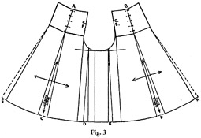increasing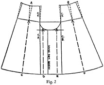 the sweep. A and B can be one inch each and yet produce a generous sweep at the hemline of a full length garment, because as the length of the garment increases, so the width increases at the hemline. Note the positions of the dotted lines in preparation for slashing.
Fig. 3 shows proportions for spreading. Spaces at C and F would be dependent upon the amount taken at A and B. D and E should not be spread more than one half the space at C or F. At the side seams, G and H, add the same amount as D and E. This distributes the movement evenly around the hemline.
If the garment were to be short, as for a skating culotte, instead of the single darts A and B, two darts could be planned and that would distribute the movement still more generally.
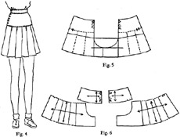Circular Pleated Shorts
Compare the silhouette of these shorts with those illustrated on page 216 which were developed from the straight culotte pattern. Because of this difference, these shorts would be more flattering to women with small waistlines and large hips, just as a semi-circular skirt would be. In such cases it would be important to keep the length in mind and make them long enough to offset the horizontal line of this yoke. A variation in the shape of the yoke would also aid in slenderizing the wearer.
Note that the pleats taper at the yoke line. This is done by making the first dotted lines shown in Fig. 5 at right angles to the yoke line. The position of the pleats conform to the basic silhouette. Gores could be used in much the same manner, if desired. Or a gored design could be made from the straight silhouette and the added sweep accomplished as in an eight-gored skirt.
Many smart designs for shorts portray some popular skirt cuts of the season.